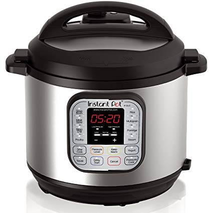

We see so many references to “cooking with my Instant Pot”, it seems to be the new craze. (Or maybe not NEW anymore, I’m sure there’s some other new kitchen gadget out by now – We’re just behind the times.)
In any event, we really do love our Instant Pot. Thanks to our son and daughter-in-law (David and Lisa) who gave us our Instant Pot (IP) for Christmas a couple years ago, we are now fans as well.

We have to admit .. it was kind of intimidating at first. But as we experimented we came to really appreciate the; convenience, the speed, how easy it cleans up, and how thoroughly it cooks our meat and veggies through and through. It’s a very precise cooker, being controlled by a microprocessor so the cooking is highly repeatable. Just set HI, MED, or LOW and set the time, then push START. It’ll tell you when it’s up to pressure, when it starts timing, and when it’s done! Easy-Peazy..
We enjoy cooking (and eating); cauliflower, broccoli, green beans, corn on the cob, Acorn Squash, zuchinni, Spaghetti Squash, chicken (tenderloins, breasts, thighs) beef or pork ribs. And if we’re going to a pot luck, we even take homemade potato salad where you cook the potatoes AND the eggs together in less than 5 minutes!
But here’s a video on my favorite dish. Simple as can be and there are links at the bottom of the video to purchase any of the products featured in the video.
Full Disclaimer –
By making your Amazon purchases from our site, we will receive from Amazon a small percentage of your purchase and it doesn’t cost you any more. We’d really appreciate your help. Thank you, Herb & Kathy
Here are some links to the products in the video
https://amzn.to/2Yu1F4b – Instant Pot 6 Qt.
https://amzn.to/2UaDust – Coleman Table Top Propane Gas Grill
https://amzn.to/2UT71UI – Kumana Avocado Hot Sauce
https://amzn.to/2HIDYQS – Silicone Basting Brush
(You’ll need to buy the ribs at the local grocery stored, eh?)
If you don’t already have an IP, and if you’re like us and don’t have a lot of counter room, the IP cooker is ideal in that you can load it up, lock the top and then with one hand, you can easily set it on the floor to cook.
We live in our motor home full-time. We had precious little table and/or counter space and having the ability to set this device on the floor just below the front of the fridge frees up table and counter space so we can prepare our salad while the main course is cooking.
So take a look and I suggest buying the original Instant Pot rather than a less expensive imitation. You’ll be glad you did … if you use it. Like anything else, if it sits on your counter or in a cupboard and doesn’t get used – then it’s worthless.
Thanks for coming along ….